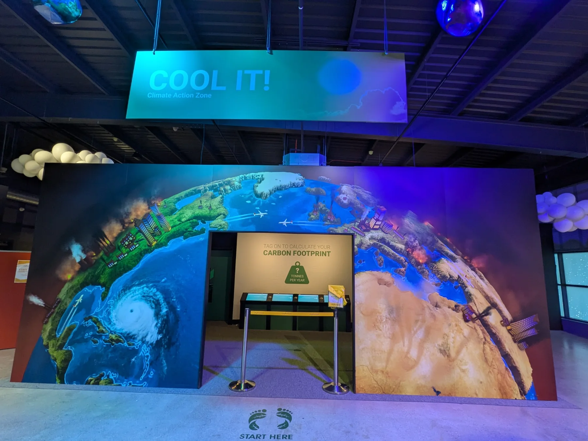

Outdoor adventures
Out and about with 49th Cork
Woodland, trails and the outdoors are at the heart of Scouting.
49th Cork · Ballincollig
Stories, activities and announcements from across the Group.
From the Group
This is ready for camp reports, activity write-ups and photo stories as they happen.
Outdoor adventures
Woodland, trails and the outdoors are at the heart of Scouting.

Group outings
Trips and activities give our young people new places to discover together.

Skills for life
Scouting combines adventure with practical learning and discovery.